Jason Traum
In every job I’ve had, I’ve found something to build. Now I build with AI.
Wharton MBA, 2028 · Morgan Stanley · Guggenheim · Brown
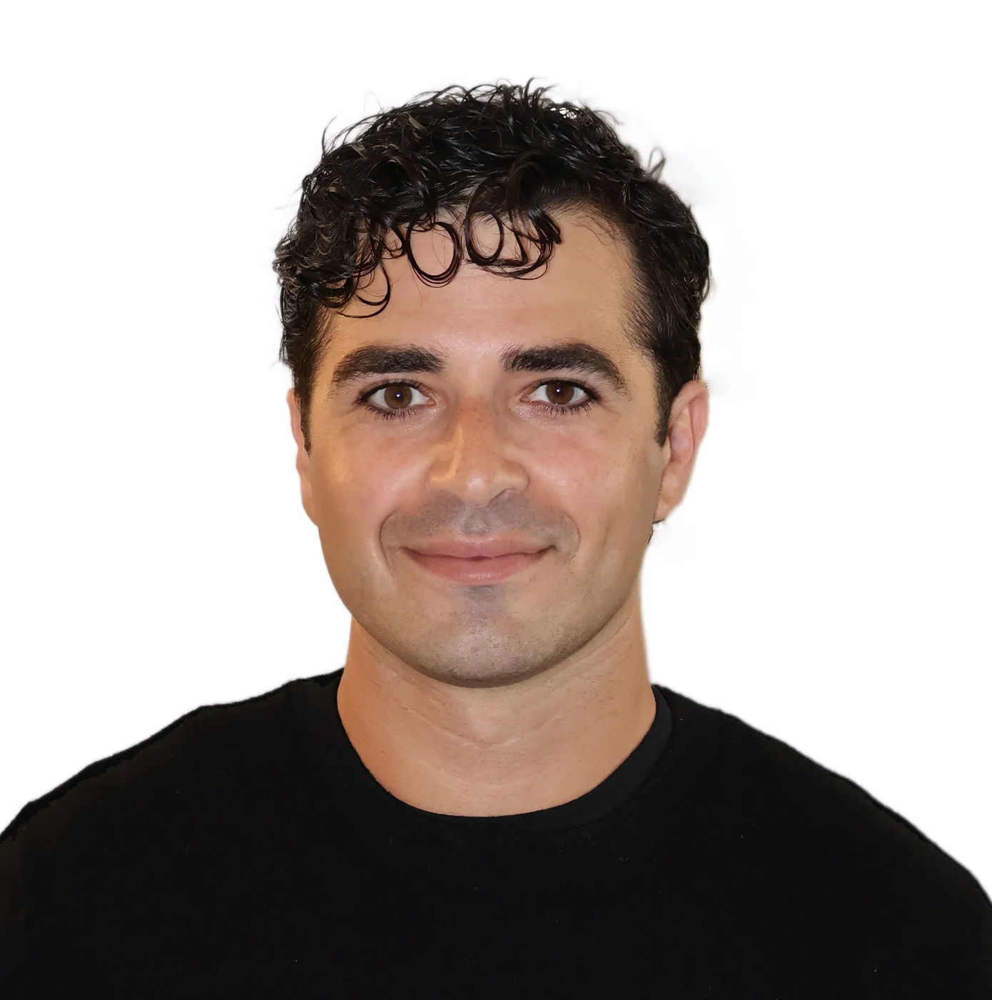
The chart palette I built at Morgan Stanley. It became the Wealth Management standard, and it’s the colors on this site. How it got made
MS Blue #275C90
Case studies
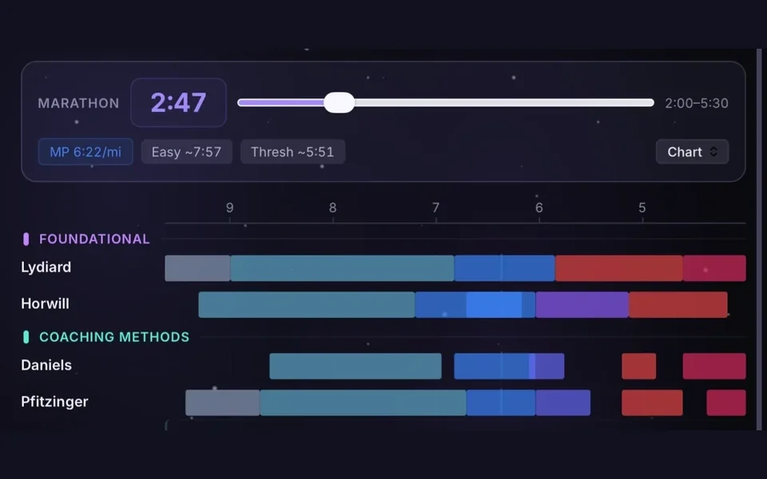
DreamyMy AI running coach. 14 of 15 beta runners rated it above the coach or app they used before.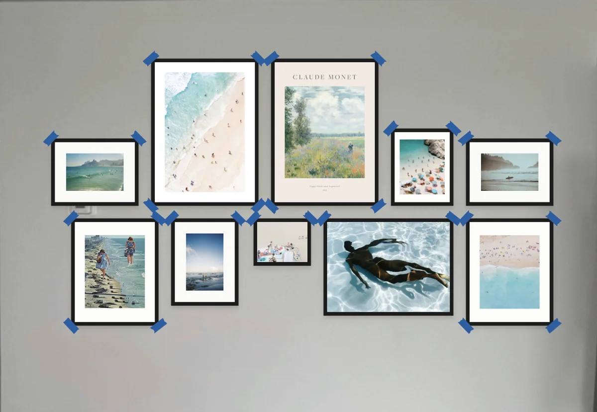
WalldrobeIt gives you finished walls drawn on your own photo, with real prints in real frame sizes, the price, and where every nail goes.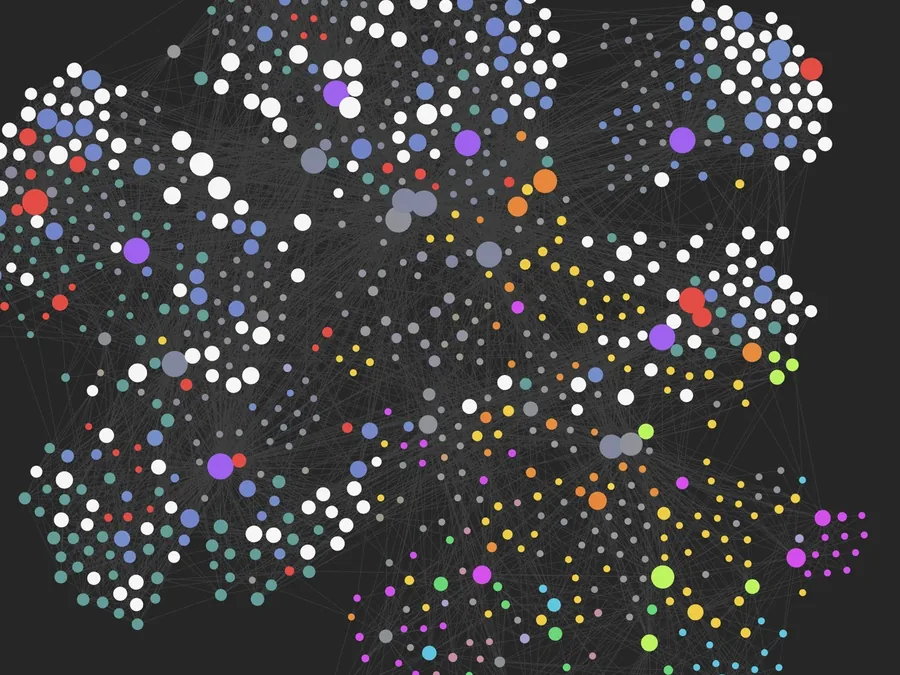
Wharton OSEvery class, reading and deadline lives in one linked vault. A script checks Canvas before every plan, and nothing gets sent or deleted without my OK.- Morgan StanleyMaking the slides went from 10 business days to 3. It’s still running without me.
A day with AI, then and now
At Morgan Stanley
- 7:10 AM
Sending the daily note
I send the note I wrote last night to about 25,000 advisors. Two of us trade off writing it.
- 8:30 AM
Handing off an agent
Last night I turned the Excel sheet I’d been using to look things up into a chartbook conversion agent. This morning I walk our team in Asia through it, and keep checking in as they take it over.
How I use AI - 11:40 AM
Brainstorming my next piece
AI and I brainstorm my next piece for Topics in Portfolio Construction. When its drafts get wordy, I point it at our past pieces.
How I use AI - 3:20 PM
Heatmaps that went grey in the middle
ExcelMy scriptI didn’t like a heatmap’s colors, so AI helped me write a script to fix them. My team adopted it, even for the weekly stock and bond indicator our CIO sends.
- 7:05 PM
Fantasy football and schedule luck
I won my fantasy league and someone called it schedule luck. Claude replayed the season 10,000 ways. I’d have won the title about 9 times in 10.
- 9:15 PM
Tomorrow’s daily note
For tomorrow’s note, AI scrapes the web and we pull from public data sites and APIs. Then I write it.
- 10:40 PM
Building Dreamy
Thinking about tomorrow’s run, I put a few hours into Dreamy. I built most of it on nights like this while training for the Jersey City Marathon.
How I built Dreamy
At Wharton
- 7:00 AM
The morning paper
Canvas check: 13 items in the next 21 days, 0 missing.I read what a Grok bot found on AI and startups, then my plan for the day. It opens with a Canvas check, a rule I added after two deadlines slipped off a weekend plan.
How Wharton OS works - 8:10 AM
An idea on my run
Mid-run I realize there’s no way to know who actually makes it to each bar on our run club’s bar crawl, so I hand the idea to Claude on my always-on computer.
5K 5 Bars - 10:00 AM
A team meeting for the strategy sim
Claude read the manual and every round’s reports. Its round 3 plan was safe, so we went bigger and finished at more than twice any other team’s value in my class.
Round by round - 2:15 PM
Between classes, DrinkDock emails
The AI wanted to ask hotels about wait times. I said to let them find their own reason, and it was staffing. We got 10 to 15 serious replies, mostly from senior people at hotels.
DrinkDock - 6:30 PM
The Dolomites trip photos
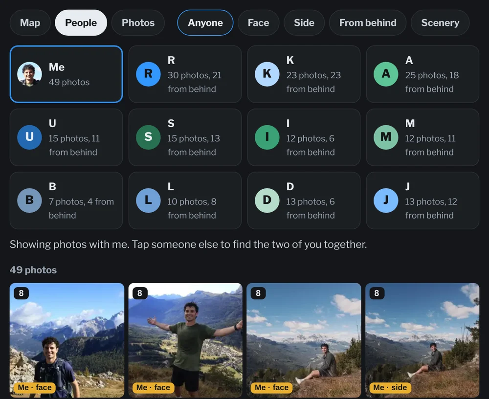
I wanted to send everyone our trip photos, but with 1,644 of them, no one could find the ones they were in. So I built an app with Claude to filter by person, with a map of where we were each day.
Open the photo finder - 8:45 PM
Working on Walldrobe
A print I love has hung in three apartments and never looked right. So I started Walldrobe as a class venture, to plan walls around art you already own.
Walldrobe - 9:40 PM
Two club events, one night
Claude checks both Partiful guest lists against my Wharton OS, which has a list of who’s in my clubs and classes, and helps me pick.
- 1:47 AM
The nightly run
While I sleep, Wharton OS pulls Canvas and files the day’s notes, so tomorrow’s plan starts from what’s actually due.
The photo finder
I named everyone in one group photo a day, and Claude found us in the rest by backpack and outfit, even from behind. Each photo lands on my Strava route by time.
This is a slimmed-down version for this site. The one I shared with the group has everyone’s names and every photo. Here everyone else is an initial, photos where anyone else faces the camera are left out, and the counts are for this slice.
Tap a dot on the route to see the photos taken there.
The calls I made
Face recognition fails from behind, and a lot of our shots were from behind. So I skipped it. Everyone kept their own backpack and mostly one outfit a day, so I named everyone in one group photo per day, and Claude tagged who’s in every photo by backpack and outfit.
Facing the camera and from behind are different searches. Every person in every photo is tagged face, side, from behind or hidden, and the tags it isn’t sure of get a question mark.
My photos had times, and so did my Strava track. Each photo’s time is matched to my track for that day, so it lands on the route with its altitude. That works for other people’s photos too, since the group moved together.
A friend wants the photos of the two of us together. Tap both of us.
Straight off the camera, a lot of photos look worse than they are. Every photo is scored for what it could be after editing, with a reason and an edit note: the crop, the light and the color.
A burst leaves a pile of near-copies. They stack into one, and the best frame is picked.
Of all 1,644 photos, 207 have me in them and 330 are just scenery. I shared it with the rest of the group.
How I got here, and what I built along the way
Most of these started as a problem I had myself.
Things I’ve builtResearch and strategy
- Morgan Stanley2022 to 2026I worked on our model portfolios and co-wrote the daily market note for about 25,000 financial advisors
- Building on the side2024 to 2026Apps I built outside of work while I was at Morgan Stanley, including Dreamy, my AI running coach
I wrote up Dreamy above.
- Wharton2026 to 2028MBA, and what I’m building next
- DrinkDockAge-verified vending machine for canned drinks at busy bars and hotels. I’m the CTOFirst of 20 in our class pitch
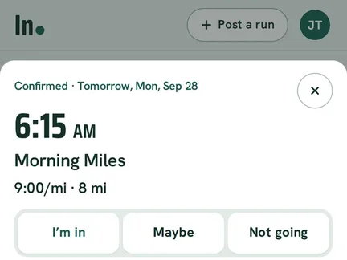
In.Plan tomorrow’s run with other Wharton and Penn grad runnersLive, in testing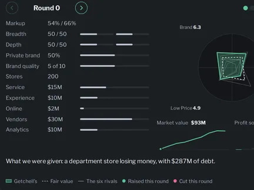
The retail strategy simBest score in the course- 5K 5 BarsRace-day app for our run club’s bar crawlUsed on race day
I wrote up Walldrobe and Wharton OS above.
- NextAI product, strategy and deployment roles
Outside work
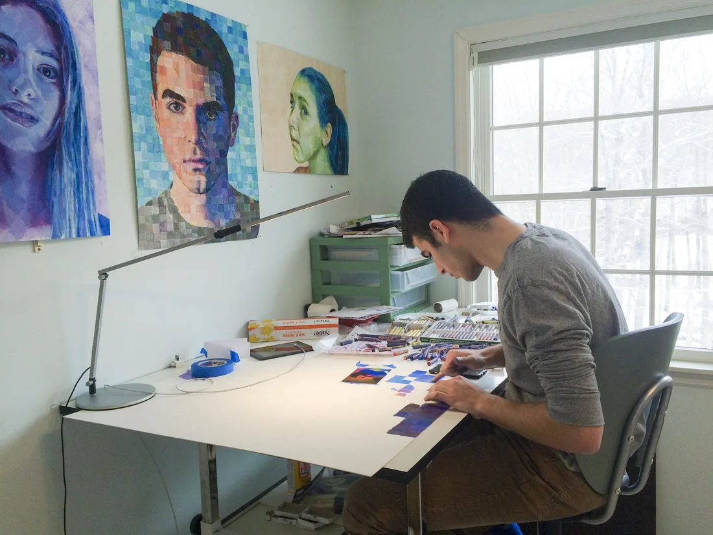
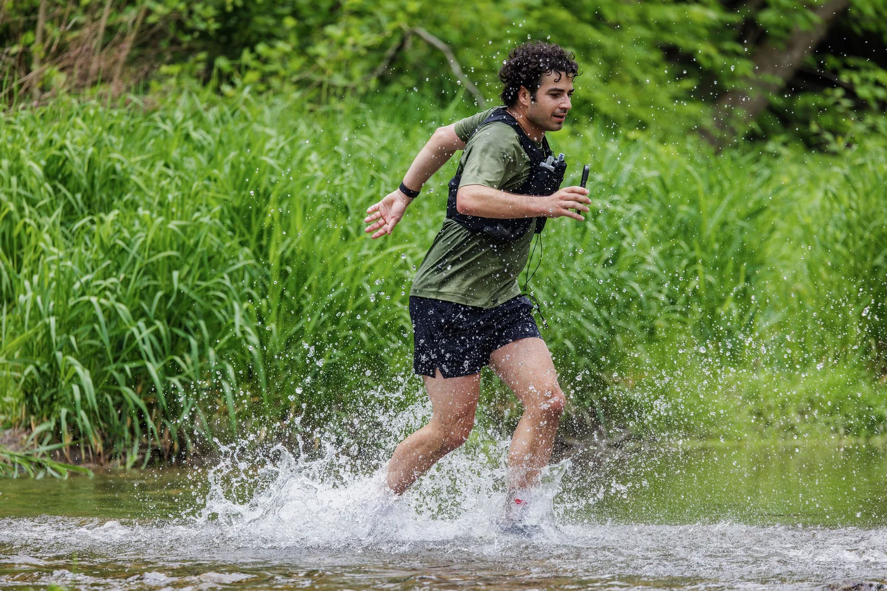
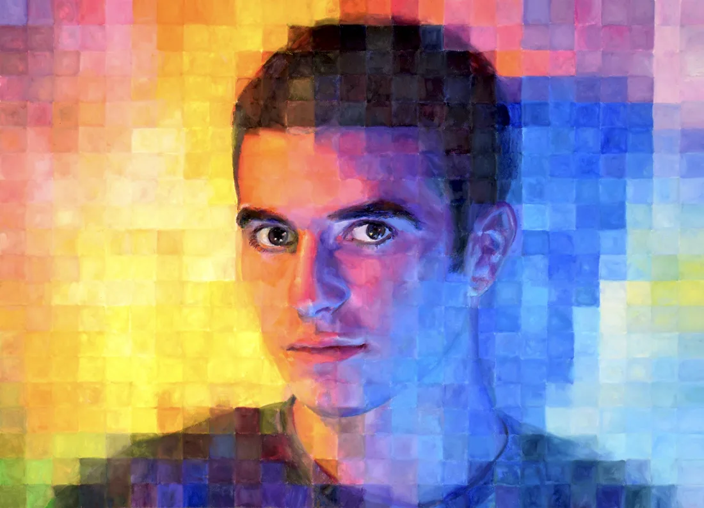
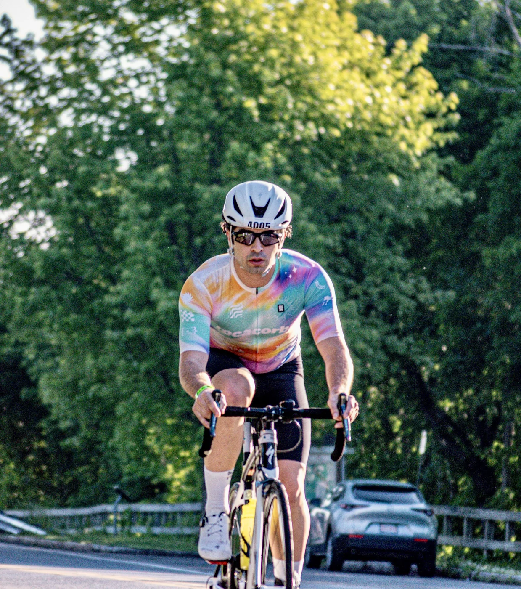
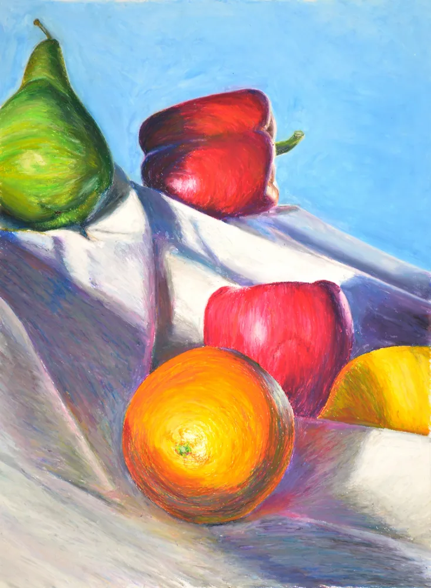
Contact
If you’re hiring for AI product, strategy or deployment, at a startup or a bigger tech company, or just want to talk running or charts, email me.